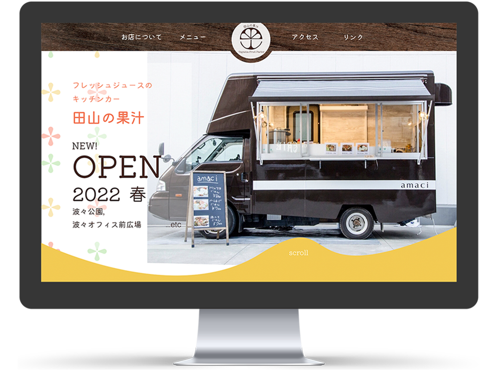
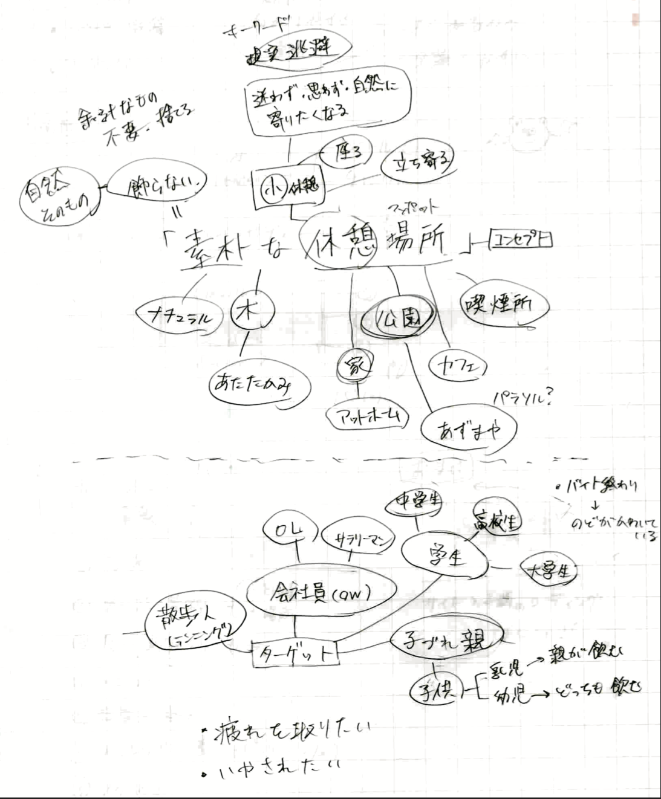
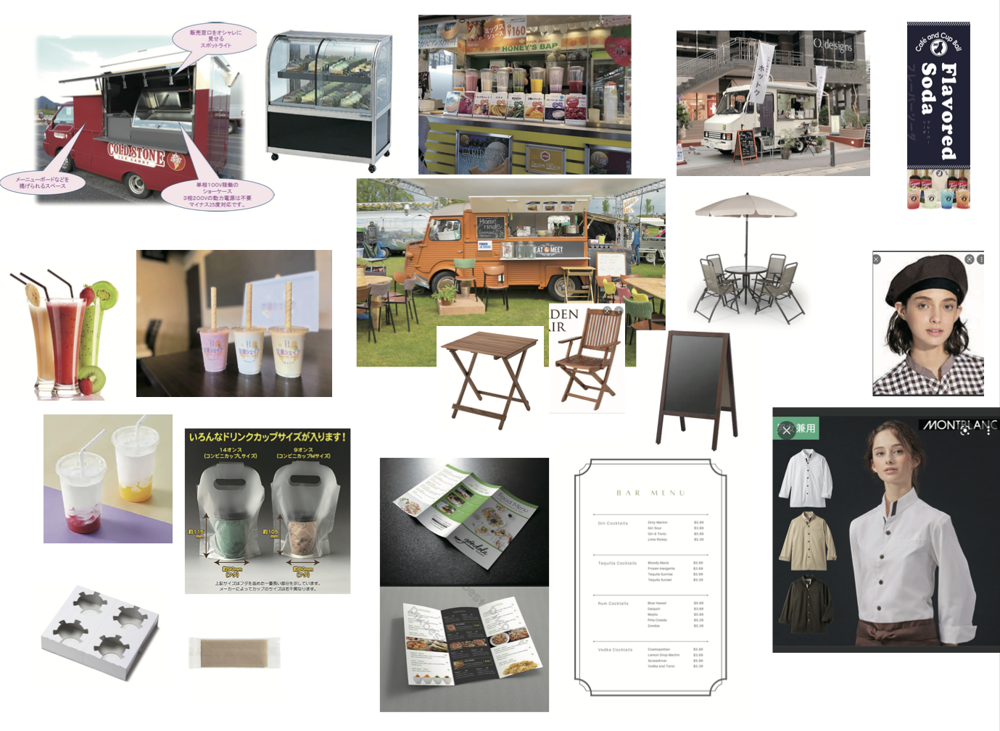
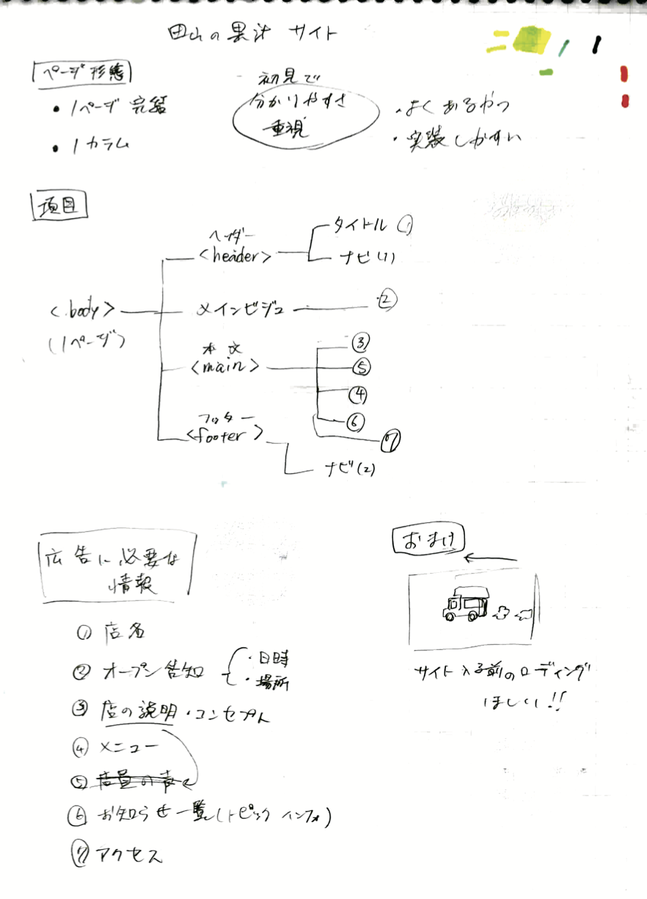
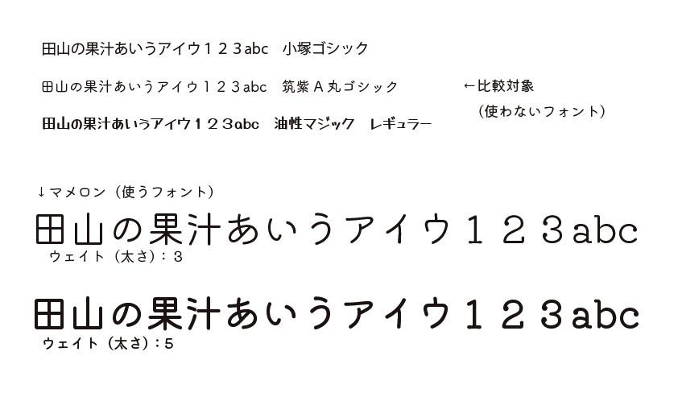
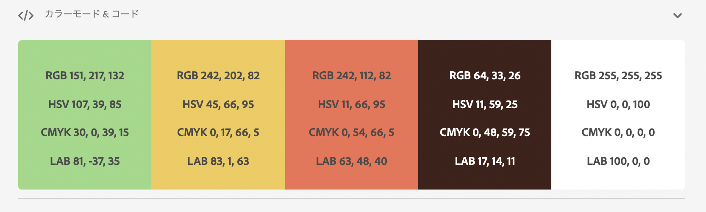
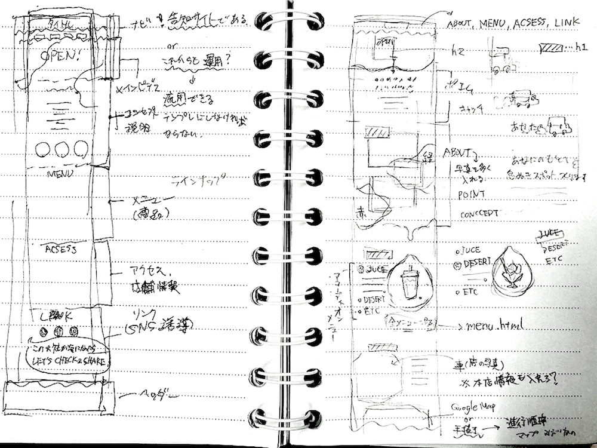
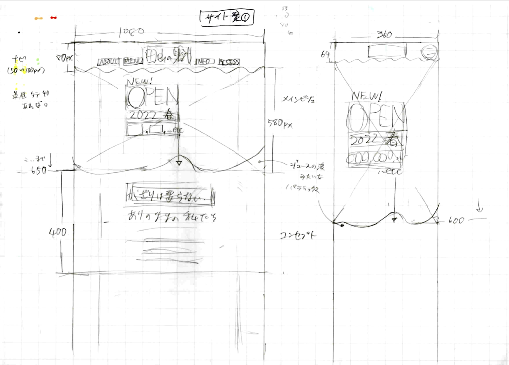
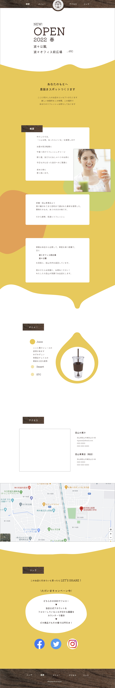
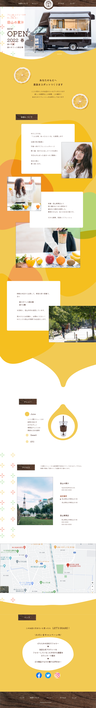

新規開店LP
架空フレッシュジュース店「田山の果汁」
1~2学年
製品デザイン基礎実習II,
製品デザイン応用実習


- 課題目標
- 架空のフレッシュジュース店の新規開店広告ツールの制作
- ターゲット
- 社会人、中高生
- コンセプト
- 素朴な休憩所
フレッシュジュースのキッチンカーを新規開店する予定の、架空店舗「田山の果汁」の店主という顧客から、広告ツールの制作を依頼されたという想定の課題。
グループワークでの、要件に沿ったコンセプトを設定し、目的に応じた広告媒体を考え、制作物はそれぞれの個人ワークとして行うという、共同制作の現場を想定した経験の機会となりました。
制作過程
1. 要件からの言語化・視覚化
顧客の要望
- 本店は地方都市の商店街にある老舗「田山青果店」
- 今回の顧客は、本店店長の息子であり、近年の周辺店舗との競争により、客足が伸び悩む本店の新しい展開づくりとして、キッチンカーの店長を担う
- フレッシュキッチンカーをはじめ、フルーツパーラーといった加工品展開により、トレンドに左右されない、老舗ならではの青果の良さを広く伝えていくという展望を持つ
- 年代を問わない女性をメインターゲットとしており、平日はオフィス街のOL・休日は中高生たちが購入し、キッチンカー停留所をきっかけとした街中のコミュニティとなるような役目を想定する
- 店長夫妻も明るく楽しげな雰囲気を投影した、カラフルな色合いでありつつ落ち着きのある店構えを希望している
この要件を整理し、グループ内でそこから連想される店舗・顧客イメージを言葉にしてまとめます。また、言語化したイメージから共通するものを選び、具体的なコンセプトを設定しました。 コンセプトをもとに、近いイメージとなる写真を用意し、イメージボードによって視覚化しました。


2. 目標設定・アウトプット
グループ内の話し合いで依頼主の目的 を確認し、その目標達成の手段となる媒体を考えました。
本グループでは、キッチンカーの停留する街中にあるポスターからQRコードを読み、LPを開く。LPから興味を持った人々が実際に店を訪れ、停留スペースに用意された什器により、要望通りに憩いの場を提供する。というような流れを考え、ポスターと店舗ロゴ、WEBサイト、什器の3種の広告ツールをグループメンバーがそれぞれで制作することとしました。
私はLP制作を担当し、グループで決めたコンセプトを踏まえ、要件を満たすために必要な構成、UI、配色、といったWEBサイト設計を進めました。



3. プロトタイプ制作
2.最初に目標設定で決めたサイト設計を基に、ワイヤーフレームをを紙面上で設計しました。（下図▼）


このイメージの策定から、モックアップとしてXDへ落とし込みます。（右図▶︎）

4. プレゼンテーション
各グループ毎のコンセプト提案と、個人のプロトタイプの発表を行いました。
この時のモックアップの講評として、
- 初見の閲覧者から見て、何の店なのか分かるモチーフ選び・写真配置をすること
- プロトタイプだからといって写真や文字をダミーのままにせず、完成品に近く、イメージが十分に伝わる状態まで作ること
- 実装の際に問題がないか、プロトタイプの時点で確認すること
- 案はなるべく複数案作り、視野を広く（客観的に）見ること
といったご指摘をいただきました。
初めてのWEBデザイン制作ということもあり、モックアップの完成度や客観的な視点が不足していたりと、問題点が多々ありました。
今回の反省点から、WEBサイトの制作工程の段取りや、グループ内でのコンセプト理解のすり合わせの重要性、表現力向上の必要性などを学びました。
5.ブラッシュアップ
2学年に上がり、初回の同課題の発表以降、1学年の内に他の制作課題の経験を通して学んだ知識を活かし、モックアップの改善とコーディングを行いました。
(改訂版モックアップは次章「ポイント」より)
ポイント

全体的に、果汁のような鮮やかな色合いと、ジュースのような波面や雫を表すビジュアルにまとめました。
また、新規開店LPであることから、初めて見る人の目を引き、楽しい気持ちになれるような画面配置や、アニメーション設置をしました。